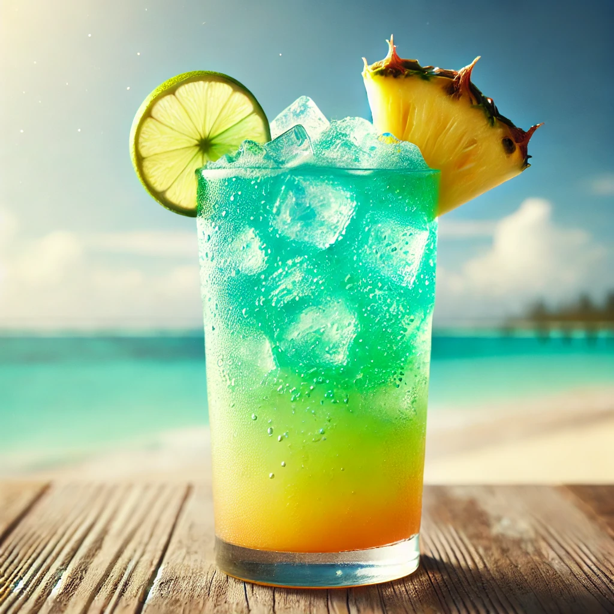

THE BUSTY MERMAID

Coral Reef Cooler
Ingredienser og Oppskrift:
Velkommen til **Coral Reef Cooler**, drinken som er like fargerik og forfriskende som et korallrev under solskinn. Denne drinken er perfekt for de som ønsker å slappe av etter en lang dag med eventyr på havet. Med en smaksprofil som minner om tropiske øyer, vil denne drinken ta deg med på en smakfull reise til havets dypeste hemmeligheter.
Så hva finner vi i denne fantastiske drinken? Her er oppskriften på å lage en smakfull dukkert:
- 1 del **mangojuice** (for en søt og eksotisk start)
- 1 del **kokosvann** (for en frisk og tropisk smak)
- 1 del **limejuice** (for å gi drinken et friskt og syrlig kick)
- 1 del **blå curacao** (for å få den magiske blå fargen som minner om havet)
- Et dash **sprite** (for en sprudlende og forfriskende finish)
Hvordan lage denne drinken:
- Fyll en shaker med is, og tøm alle ingrediensene oppi.
- Rist det hele som om du er på vei til å oppdage et skjult korallrev.
- Sil drinken i et høyt glass fylt med is og topp med en sprut av sprite.
- Skål og nyt den tropiske følelsen av et korallrev, du eventyrlystne sjøfarer!
OBS: Denne drinken har en tendens til å få folk til å føle at de er på ferie, så vær forberedt på en uforglemmelig opplevelse!